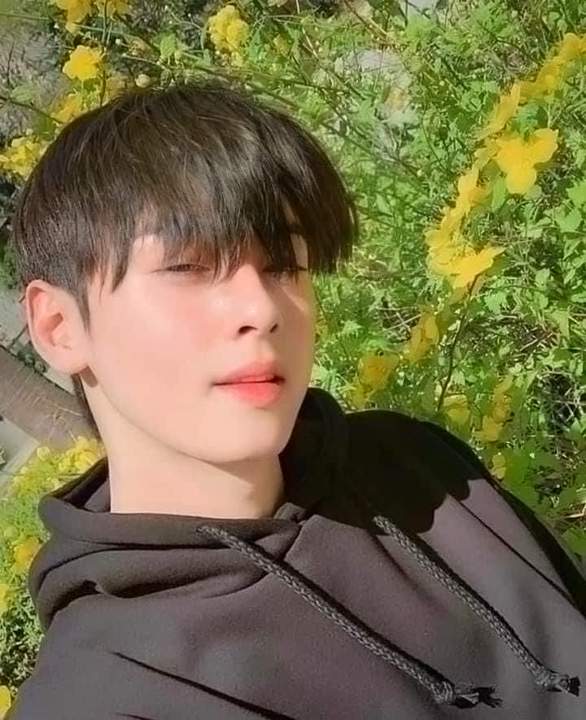

About Me
**Biography of Leo**
Leo is a dedicated swimmer, student, and coach known for their passion for the sport and commitment to inspiring others. Born in 2002 in Navotas, Leo discovered a love for swimming at an early age. They quickly excelled in local competitions, earning numerous awards and recognition for their talent and hard work.
While balancing a rigorous academic schedule, leo pursued swimming at a competitive level, training with various teams and participating in regional championships. Their determination led to a scholarship opportunity at CMU, where they are currently studying BSIT.
As a coach, Leo shares their expertise with young swimmers, focusing on technique and personal development. They believe in fostering a positive and encouraging environment, helping each athlete reach their full potential. In addition to coaching, [Your Name]volunteers in community swim programs, promoting water safety and fitness among youth.
When not in the pool, leo enjoys outdoor activities, embodying a balanced lifestyle that emphasizes health and wellness. Their journey as a swimmer and coach reflects a commitment to excellence, leadership, and community engagement.!
CONTACT HERE
https://www.facebook.com/poginijologs
https://www.instagram.com/john_patrick_leo